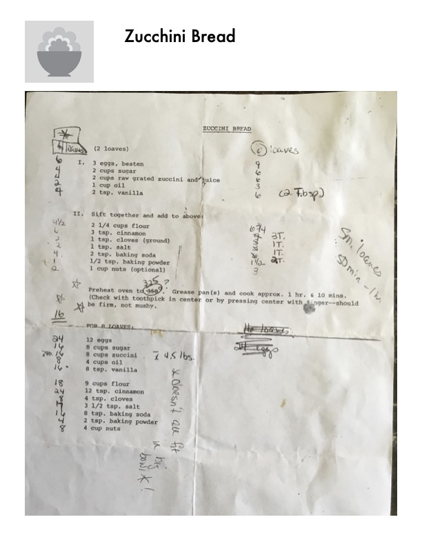

Zucchini Bread

Original cookbook page 111
A classic zucchini bread recipe with two versions - one for 2 loaves and a scaled-up version for 8 loaves. Includes handwritten scaling calculations in margins.
Cook: 1 hr & 10 mins (50 min - 1 hr for small loaves)
Ingredients
- 3 eggs, beaten
- 2 cups sugar
- 2 cups raw grated zucchini and juice
- 1 cup oil
- 2 tsp. vanilla
- 2 1/4 cups flour
- 3 tsp. cinnamon
- 1 tsp. cloves (ground)
- 1 tsp. salt
- 2 tsp. baking soda
- 1/2 tsp. baking powder
- 1 cup nuts (optional)
Instructions
- Combine Part I ingredients (eggs beaten, sugar, grated zucchini and juice, oil, vanilla)
- Sift together Part II dry ingredients (flour, cinnamon, cloves, salt, baking soda, baking powder) and add to above mixture
- Add nuts if desired
- Preheat oven to 325°F
- Grease pan(s) and cook approx. 1 hr. & 10 mins
- Check with toothpick in center or by pressing center with finger — should be firm, not mushy
Recipe #111 from collection